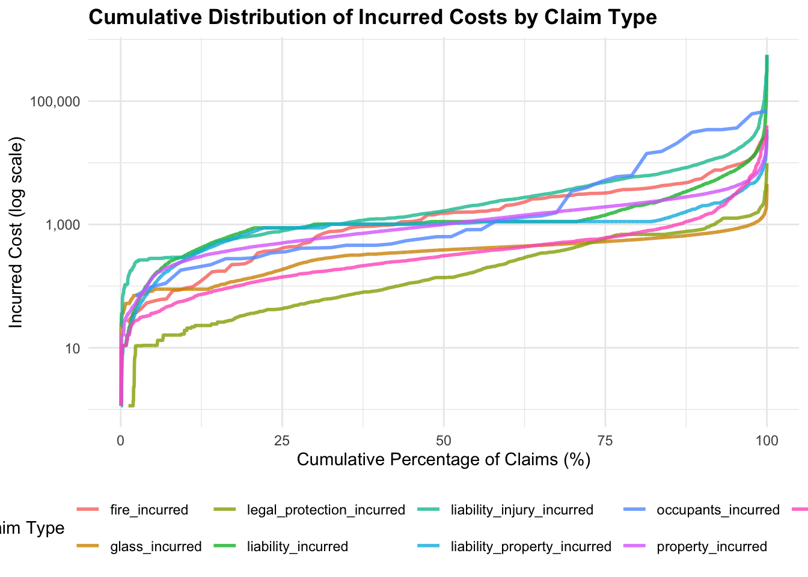
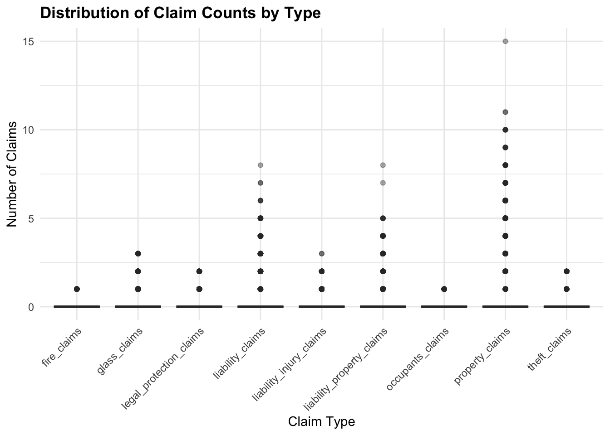
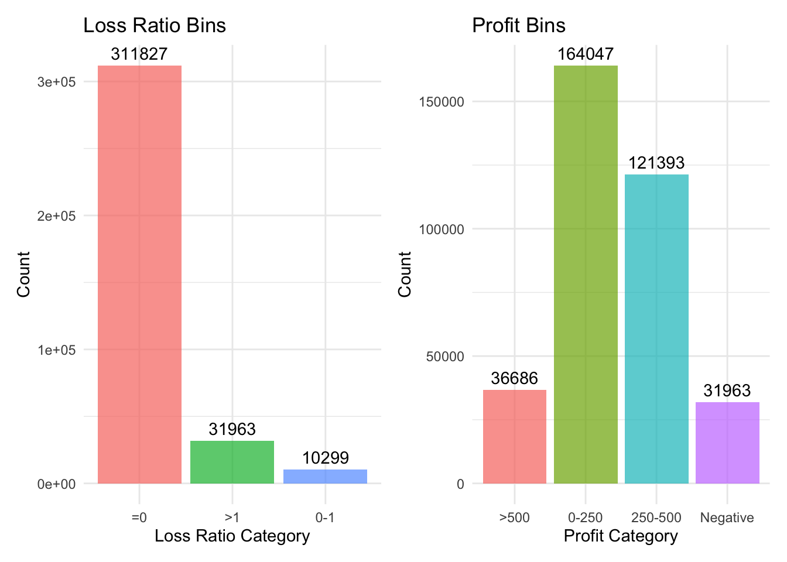
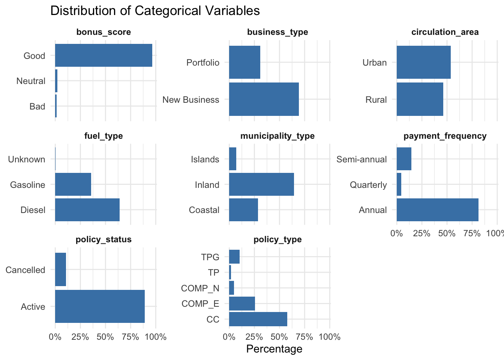
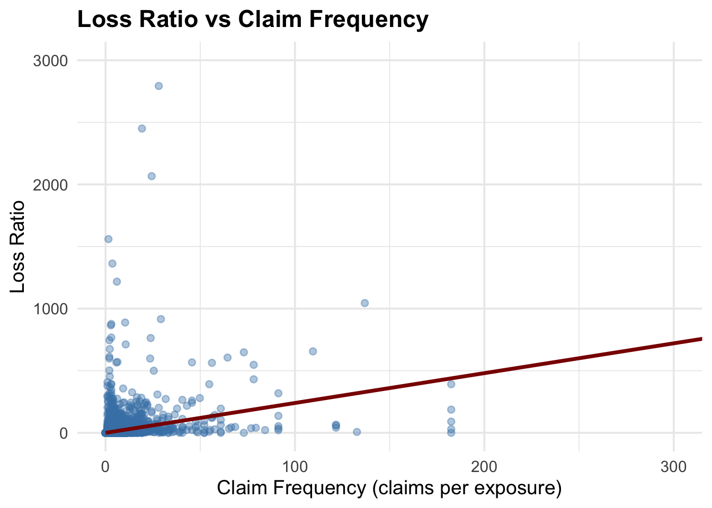
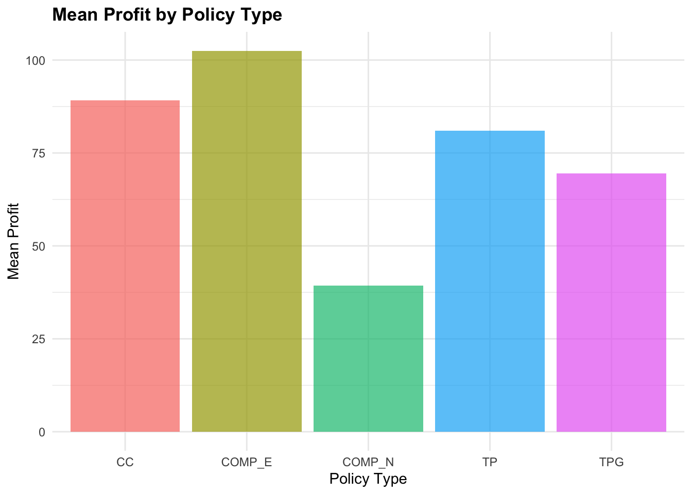
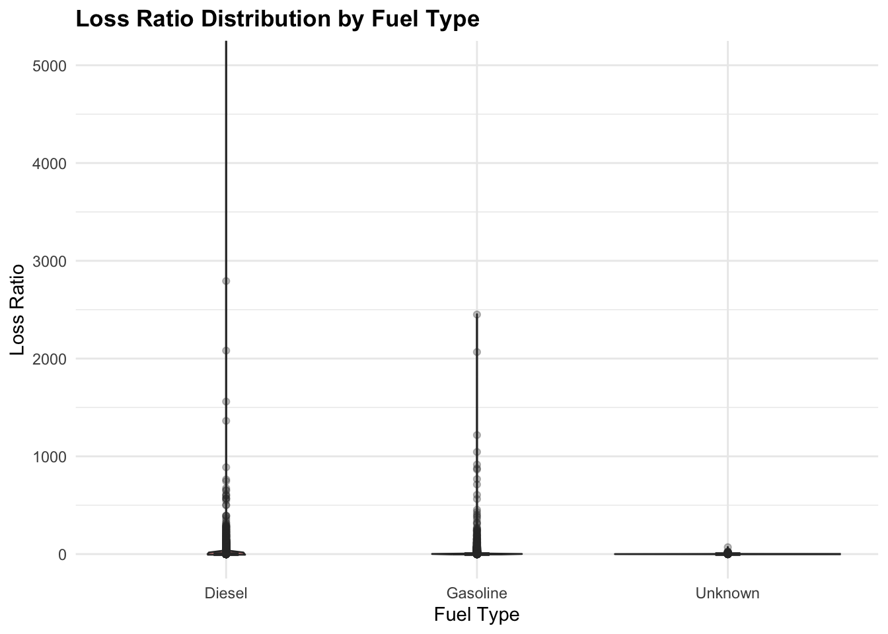
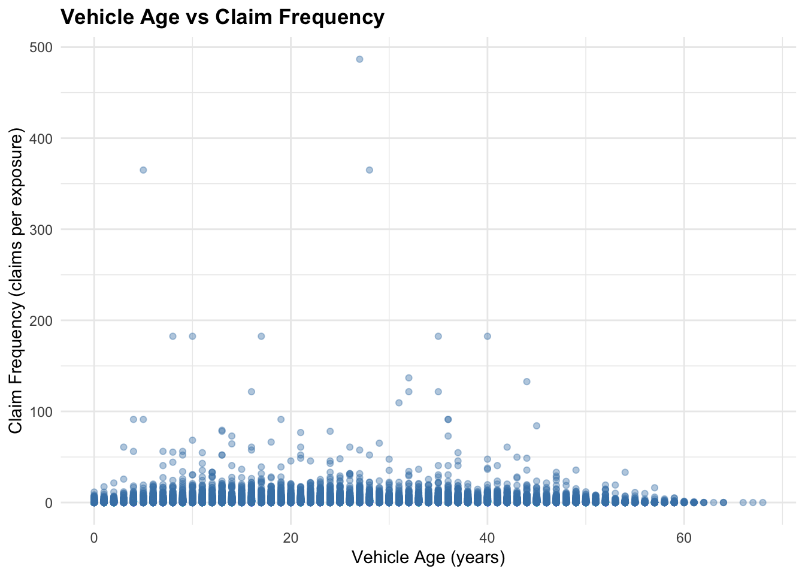
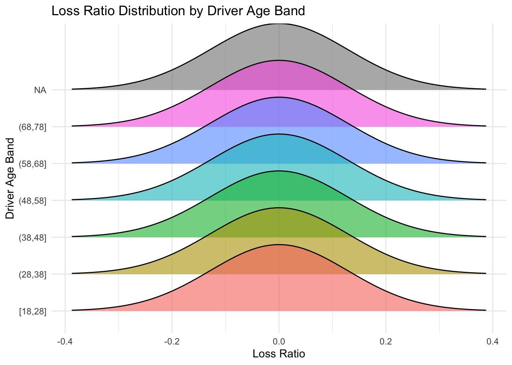

pacman::p_load(tidyverse, readr, dplyr, patchwork, zoo,
ggthemes, hrbrthemes, ggridges, plotly,
forcats, skimr, scales, corrplot, ggiraph) Take-home Exercise 1
1 Overview
1.1 Background
Using a real-world open-access motor vehicle insurance portfolio dataset and appropriate visual analytics libraries in R, this applied visual anaytics investigation requires you to demonstrate the potential value of visual analytics techniques for exploring and analysing numerical, categorical, and temporal variables. The objective is to gain deeper insights into data distributions and identifying key factors influencing the profitability and volatility of the insurance portfolio.
1.2 The Task
The specific tasks of this study are:
Apply suitable univariate visual analytics techniques to explore the distributions and characteristics of numerical and categorical variables.
Apply suitable bivariate visual analytics techniques to investigate and statistically validate factors influencing the profitability and volatility of the insurance portfolio.
2 Getting Started
2.1 Loading Packages
2.2 Data Sources
A real world motor vehicle insurance portfolio data set from a Spanish insurance company specialised in non-life insurance will be used in this study. The data set and its cookbook are available for download at Mendeley Data.
3 Data Wrangling
3.1 Importing and Inspecting Data
portfolio <- read_delim("data/Dataset of motor insurance portfolio.csv", delim = ";")
glimpse(portfolio)Rows: 354,140
Columns: 47
$ insured_id <dbl> 1, 2, 2, 2, 3, 3, 3, 4, 4, 4, 5, 5, 5, 6, …
$ year <dbl> 2022, 2022, 2023, 2024, 2022, 2023, 2024, …
$ policy_type <chr> "COMP_E", "COMP_E", "COMP_E", "COMP_E", "C…
$ policy_status <chr> "C", "A", "A", "A", "A", "A", "A", "A", "A…
$ business_type <chr> "NB", "P", "P", "P", "NB", "P", "P", "NB",…
$ payment_frequency <chr> "A", "A", "A", "A", "S", "S", "S", "A", "A…
$ bonus_score <chr> "G", "G", "G", "G", "G", "G", "G", "G", "G…
$ driver_age <dbl> 48, 43, 44, 45, 45, 46, 47, 32, 33, 34, 39…
$ vehicle_age <dbl> 22, 24, 25, 26, 26, 27, 28, 12, 13, 14, 20…
$ age_driving_licence <dbl> 26, 19, 19, 18, 19, 19, 19, 19, 19, 19, 19…
$ fuel_type <chr> "G", "D", "D", "D", "D", "D", "D", "D", "D…
$ vehicle_value <dbl> 149511.44, 65065.12, 65065.12, 65065.12, 5…
$ seats <dbl> 4, 8, 8, 8, 7, 7, 7, 5, 5, 5, 5, 5, 5, 5, …
$ power_to_weight_ratio <dbl> 3.92, 10.15, 10.15, 10.15, 9.19, 9.19, 9.1…
$ vehicle_brand <chr> "PORSCHE", "MERCEDES", "MERCEDES", "MERCED…
$ municipality_type <chr> "I", "I", "I", "I", "I", "I", "I", "I", "I…
$ circulation_area <chr> "U", "U", "U", "U", "R", "R", "R", "R", "R…
$ total_premium <dbl> 279.5576, 546.6234, 548.7526, 584.6324, 68…
$ liability_premium <dbl> 30.60232, 114.33336, 110.66689, 122.09253,…
$ property_damage_premium <dbl> 121.9127, 303.1060, 304.9560, 305.2251, 35…
$ theft_premium <dbl> 112.361489, 80.784824, 83.521384, 107.8868…
$ fire_premium <dbl> 3.832441, 7.826861, 6.151465, 5.842892, 7.…
$ glass_premium <dbl> 8.305788, 30.091751, 32.861626, 31.101584,…
$ legal_protection_premium <dbl> 2.043622, 7.812747, 7.655637, 10.084173, 6…
$ occupants_premium <dbl> 0.4992053, 2.6679084, 2.9395659, 2.3992827…
$ total_claims <dbl> 0, 0, 1, 2, 0, 0, 0, 0, 0, 0, 0, 0, 0, 5, …
$ liability_claims <dbl> 0, 0, 1, 1, 0, 0, 0, 0, 0, 0, 0, 0, 0, 0, …
$ liability_property_claims <dbl> 0, 0, 1, 1, 0, 0, 0, 0, 0, 0, 0, 0, 0, 0, …
$ liability_injury_claims <dbl> 0, 0, 0, 0, 0, 0, 0, 0, 0, 0, 0, 0, 0, 0, …
$ property_claims <dbl> 0, 0, 0, 1, 0, 0, 0, 0, 0, 0, 0, 0, 0, 5, …
$ theft_claims <dbl> 0, 0, 0, 0, 0, 0, 0, 0, 0, 0, 0, 0, 0, 0, …
$ fire_claims <dbl> 0, 0, 0, 0, 0, 0, 0, 0, 0, 0, 0, 0, 0, 0, …
$ glass_claims <dbl> 0, 0, 0, 0, 0, 0, 0, 0, 0, 0, 0, 0, 0, 0, …
$ legal_protection_claims <dbl> 0, 0, 0, 0, 0, 0, 0, 0, 0, 0, 0, 0, 0, 0, …
$ occupants_claims <dbl> 0, 0, 0, 0, 0, 0, 0, 0, 0, 0, 0, 0, 0, 0, …
$ total_incurred <dbl> 0.000, 0.000, 233.013, 2586.361, 0.000, 0.…
$ liability_incurred <dbl> 0.000, 0.000, 233.013, 1035.000, 0.000, 0.…
$ liability_property_incurred <dbl> 0.000, 0.000, 233.013, 1035.000, 0.000, 0.…
$ liability_injury_incurred <dbl> 0.000, 0.000, 0.000, 0.000, 0.000, 0.000, …
$ property_incurred <dbl> 0.000, 0.000, 0.000, 1551.361, 0.000, 0.00…
$ theft_incurred <dbl> 0, 0, 0, 0, 0, 0, 0, 0, 0, 0, 0, 0, 0, 0, …
$ fire_incurred <dbl> 0, 0, 0, 0, 0, 0, 0, 0, 0, 0, 0, 0, 0, 0, …
$ glass_incurred <dbl> 0, 0, 0, 0, 0, 0, 0, 0, 0, 0, 0, 0, 0, 0, …
$ legal_protection_incurred <dbl> 0, 0, 0, 0, 0, 0, 0, 0, 0, 0, 0, 0, 0, 0, …
$ occupants_incurred <dbl> 0, 0, 0, 0, 0, 0, 0, 0, 0, 0, 0, 0, 0, 0, …
$ total_exposure <dbl> 0.09863014, 1.00000000, 1.00000000, 1.0000…
$ liability_exposure <dbl> 0.09863014, 1.00000000, 1.00000000, 1.0000…3.2 Data Type Conversion
Convert categorical variables (policy_type, fuel_type, etc.) into factors.
| Variable | Data Type | Reason |
|---|---|---|
| insured_id | integer | Unique identifier, sequential ID. |
| year | integer | Calendar year, discrete not continuous. |
| policy_type | factor | Categorical (COMP_E, COMP_N, TP, etc.). |
| policy_status | factor | Categorical (A = active, C = cancelled). |
| business_type | factor | Categorical (NB = new business, P = portfolio). |
| payment_frequency | factor | Categorical (A, S, Q). |
| bonus_score | factor | Categorical (G, N, B). |
| driver_age | integer | Age in years. |
| vehicle_age | integer | Age in years. |
| age_driving_licence | integer | Year of licence issuance (discrete year). |
| fuel_type | factor | Categorical (D = diesel, G = gasoline). |
| vehicle_value | numeric | Continuous monetary value. |
| seats | integer | Count of seats. |
| power_to_weight_ratio | numeric | Continuous ratio. |
| vehicle_brand | factor | Categorical brand names. |
| municipality_type | factor | Categorical (I, C, IS). |
| circulation_area | factor | Categorical (U, R). |
| *Premiums (all _premium) | numeric | Continuous monetary values. |
| *Claims (all _claims) | integer | Count of claims (discrete). |
| *Incurred (all _incurred) | numeric | Continuous monetary values. |
| *Exposure (all _exposure) | numeric | Continuous, fractional values (0–1 or >1). |
portfolio <- portfolio %>%
mutate(
# columns → integer
insured_id = as.integer(insured_id),
year = as.integer(year),
driver_age = as.integer(driver_age),
vehicle_age = as.integer(vehicle_age),
age_driving_licence = as.integer(age_driving_licence),
seats = as.integer(seats),
total_claims = as.integer(total_claims),
liability_claims = as.integer(liability_claims),
liability_property_claims = as.integer(liability_property_claims),
liability_injury_claims = as.integer(liability_injury_claims),
property_claims = as.integer(property_claims),
theft_claims = as.integer(theft_claims),
fire_claims = as.integer(fire_claims),
glass_claims = as.integer(glass_claims),
legal_protection_claims = as.integer(legal_protection_claims),
occupants_claims = as.integer(occupants_claims),
# columns → factor
policy_type = factor(policy_type),
policy_status = factor(policy_status),
business_type = factor(business_type),
payment_frequency = factor(payment_frequency),
bonus_score = factor(bonus_score),
vehicle_brand = factor(vehicle_brand),
fuel_type = factor(fuel_type),
municipality_type = factor(municipality_type),
circulation_area = factor(circulation_area)
)3.3 Check Consistency
Ensure numeric columns (e.g., vehicle_value, total_premium) are properly parsed as numeric.
sapply(portfolio, class) insured_id year
"integer" "integer"
policy_type policy_status
"factor" "factor"
business_type payment_frequency
"factor" "factor"
bonus_score driver_age
"factor" "integer"
vehicle_age age_driving_licence
"integer" "integer"
fuel_type vehicle_value
"factor" "numeric"
seats power_to_weight_ratio
"integer" "numeric"
vehicle_brand municipality_type
"factor" "factor"
circulation_area total_premium
"factor" "numeric"
liability_premium property_damage_premium
"numeric" "numeric"
theft_premium fire_premium
"numeric" "numeric"
glass_premium legal_protection_premium
"numeric" "numeric"
occupants_premium total_claims
"numeric" "integer"
liability_claims liability_property_claims
"integer" "integer"
liability_injury_claims property_claims
"integer" "integer"
theft_claims fire_claims
"integer" "integer"
glass_claims legal_protection_claims
"integer" "integer"
occupants_claims total_incurred
"integer" "numeric"
liability_incurred liability_property_incurred
"numeric" "numeric"
liability_injury_incurred property_incurred
"numeric" "numeric"
theft_incurred fire_incurred
"numeric" "numeric"
glass_incurred legal_protection_incurred
"numeric" "numeric"
occupants_incurred total_exposure
"numeric" "numeric"
liability_exposure
"numeric" 3.4 Recoding New Columns
To enhance analytical capability and support profitability and risk analysis, several derived variables were created.
Profitability Measures - These are key indicators for evaluating insurance performance.
loss_ratio = total_incurred / total_premium
profit = total_premium - total_incurred
Risk Metrics - These measures separate claim occurrence from claim magnitude.
claim_frequency = total_claims / total_exposure
claim_severity = total_incurred / total_claims (for policies with claims)
Exposure-adjusted Metrics - Standardizing by exposure ensures fair comparison across policies.
premium_per_exposure
incurred_per_exposure
Binary Indicators
has_claim
high_cost_claim
profitable_policy
# Precompute threshold for high-cost claims
threshold_incurred <- quantile(portfolio$total_incurred, 0.95, na.rm = TRUE)
portfolio <- portfolio %>%
mutate(
# Profitability measures
loss_ratio = ifelse(total_premium > 0, total_incurred / total_premium, NA_real_),
profit = total_premium - total_incurred,
# Risk metrics
claim_frequency = ifelse(total_exposure > 0, total_claims / total_exposure, 0), # set 0 if exposure=0
claim_severity = ifelse(total_claims > 0, total_incurred / total_claims, NA_real_),
# Exposure-adjusted metrics
premium_per_exposure = ifelse(total_exposure > 0, total_premium / total_exposure, NA_real_),
incurred_per_exposure = ifelse(total_exposure > 0, total_incurred / total_exposure, NA_real_),
# Binary indicators as factors
has_claim = factor(ifelse(total_claims > 0, 1, 0), levels = c(0,1), labels = c("No Claim","Has Claim")),
high_cost_claim = factor(ifelse(total_incurred > threshold_incurred, 1, 0), levels = c(0,1), labels = c("Normal","High Cost")),
profitable_policy = factor(ifelse(profit > 0, 1, 0), levels = c(0,1), labels = c("Not Profitable","Profitable"))
)3.5 Check for Duplicates and Missing values
The below code chunk is used to check whether an entire row (all columns) is repeated.
portfolio[duplicated(portfolio),]# A tibble: 0 × 56
# ℹ 56 variables: insured_id <int>, year <int>, policy_type <fct>,
# policy_status <fct>, business_type <fct>, payment_frequency <fct>,
# bonus_score <fct>, driver_age <int>, vehicle_age <int>,
# age_driving_licence <int>, fuel_type <fct>, vehicle_value <dbl>,
# seats <int>, power_to_weight_ratio <dbl>, vehicle_brand <fct>,
# municipality_type <fct>, circulation_area <fct>, total_premium <dbl>,
# liability_premium <dbl>, property_damage_premium <dbl>, …No rows in this dataset are exact duplicates across all 47 columns.
colSums(is.na(portfolio)) insured_id year
0 0
policy_type policy_status
0 0
business_type payment_frequency
0 0
bonus_score driver_age
0 0
vehicle_age age_driving_licence
2 2
fuel_type vehicle_value
1287 513
seats power_to_weight_ratio
0 0
vehicle_brand municipality_type
0 0
circulation_area total_premium
0 0
liability_premium property_damage_premium
0 0
theft_premium fire_premium
0 0
glass_premium legal_protection_premium
0 0
occupants_premium total_claims
0 0
liability_claims liability_property_claims
0 0
liability_injury_claims property_claims
0 0
theft_claims fire_claims
0 0
glass_claims legal_protection_claims
0 0
occupants_claims total_incurred
0 0
liability_incurred liability_property_incurred
0 0
liability_injury_incurred property_incurred
0 0
theft_incurred fire_incurred
0 0
glass_incurred legal_protection_incurred
0 0
occupants_incurred total_exposure
0 0
liability_exposure loss_ratio
0 49
profit claim_frequency
0 0
claim_severity premium_per_exposure
303333 49
incurred_per_exposure has_claim
49 0
high_cost_claim profitable_policy
0 0 Vehicle age & Age driving licence → Only 2 missing each → you can safely drop those rows
Fuel type: 1,287 missing (~0.36% of dataset) → create a new category “Unknown” to preserve those rows.
Vehicle value: 513 missing (~0.15% of dataset) → use brand-specific median (e.g., median value per vehicle_brand)
Loss ratio → NA when total_premium = 0 (division undefined).
Claim severity → NA when total_claims = 0 (no claims to divide by).
Exposure-adjusted metrics → NA when total_exposure = 0.
portfolio <- portfolio %>%
mutate(
# Impute vehicle_value with brand-specific median
vehicle_value = ifelse(is.na(vehicle_value),
ave(vehicle_value, vehicle_brand,
FUN = function(x) median(x, na.rm = TRUE)),
vehicle_value),
# Impute fuel_type with "Unknown"
fuel_type = fct_explicit_na(factor(fuel_type), na_level = "Unknown")
)
# Drop rows with missing driver/vehicle age
portfolio <- portfolio %>%
filter(!is.na(vehicle_age), !is.na(age_driving_licence))portfolio <- portfolio %>%
mutate(
# Flags for structural NA cases
has_premium = total_premium > 0,
has_exposure = total_exposure > 0,
has_claims = total_claims > 0
)3.6 Check for Outliers
skim(portfolio)| Name | portfolio |
| Number of rows | 354138 |
| Number of columns | 59 |
| _______________________ | |
| Column type frequency: | |
| factor | 12 |
| logical | 3 |
| numeric | 44 |
| ________________________ | |
| Group variables | None |
Variable type: factor
| skim_variable | n_missing | complete_rate | ordered | n_unique | top_counts |
|---|---|---|---|---|---|
| policy_type | 0 | 1 | FALSE | 5 | CC: 204635, COM: 91199, TPG: 36367, COM: 16180 |
| policy_status | 0 | 1 | FALSE | 2 | A: 315810, C: 38328 |
| business_type | 0 | 1 | FALSE | 2 | NB: 245435, P: 108703 |
| payment_frequency | 0 | 1 | FALSE | 3 | A: 287895, S: 50847, Q: 15396 |
| bonus_score | 0 | 1 | FALSE | 3 | G: 341557, N: 7850, B: 4731 |
| fuel_type | 0 | 1 | FALSE | 3 | D: 226400, G: 126451, Unk: 1287 |
| vehicle_brand | 0 | 1 | FALSE | 68 | REN: 34354, CIT: 32489, PEU: 29574, VOL: 28790 |
| municipality_type | 0 | 1 | FALSE | 3 | I: 228615, C: 101383, IS: 24140 |
| circulation_area | 0 | 1 | FALSE | 2 | U: 190506, R: 163632 |
| has_claim | 0 | 1 | FALSE | 2 | No : 303332, Has: 50806 |
| high_cost_claim | 0 | 1 | FALSE | 2 | Nor: 336432, Hig: 17706 |
| profitable_policy | 0 | 1 | FALSE | 2 | Pro: 322126, Not: 32012 |
Variable type: logical
| skim_variable | n_missing | complete_rate | mean | count |
|---|---|---|---|---|
| has_premium | 0 | 1 | 1.00 | TRU: 354089, FAL: 49 |
| has_exposure | 0 | 1 | 1.00 | TRU: 354089, FAL: 49 |
| has_claims | 0 | 1 | 0.14 | FAL: 303332, TRU: 50806 |
Variable type: numeric
| skim_variable | n_missing | complete_rate | mean | sd | p0 | p25 | p50 | p75 | p100 | hist |
|---|---|---|---|---|---|---|---|---|---|---|
| insured_id | 0 | 1.00 | 76044.36 | 51272.32 | 1.00 | 33342.00 | 66840.00 | 112948.75 | 185678.00 | ▇▇▆▃▃ |
| year | 0 | 1.00 | 2023.29 | 0.76 | 2022.00 | 2023.00 | 2023.00 | 2024.00 | 2024.00 | ▃▁▆▁▇ |
| driver_age | 0 | 1.00 | 49.01 | 12.07 | 18.00 | 39.00 | 48.00 | 58.00 | 90.00 | ▂▇▇▃▁ |
| vehicle_age | 0 | 1.00 | 25.92 | 11.62 | 0.00 | 17.00 | 25.00 | 35.00 | 68.00 | ▃▇▆▂▁ |
| age_driving_licence | 0 | 1.00 | 22.99 | 6.36 | 0.00 | 19.00 | 20.00 | 25.00 | 80.00 | ▁▇▁▁▁ |
| vehicle_value | 1 | 1.00 | 26985.07 | 12325.29 | 1630.12 | 18607.58 | 24741.66 | 32266.26 | 374034.21 | ▇▁▁▁▁ |
| seats | 0 | 1.00 | 5.08 | 0.76 | 2.00 | 5.00 | 5.00 | 5.00 | 9.00 | ▁▁▇▁▁ |
| power_to_weight_ratio | 0 | 1.00 | 12.33 | 2.48 | 0.00 | 10.74 | 12.05 | 13.73 | 64.81 | ▇▅▁▁▁ |
| total_premium | 0 | 1.00 | 296.72 | 227.85 | 0.00 | 146.15 | 257.90 | 384.98 | 5107.64 | ▇▁▁▁▁ |
| liability_premium | 0 | 1.00 | 180.71 | 129.72 | 0.00 | 92.52 | 165.78 | 237.83 | 2320.77 | ▇▁▁▁▁ |
| property_damage_premium | 0 | 1.00 | 73.51 | 155.80 | 0.00 | 0.00 | 0.00 | 83.62 | 3736.73 | ▇▁▁▁▁ |
| theft_premium | 0 | 1.00 | 11.25 | 19.00 | 0.00 | 1.81 | 5.90 | 13.52 | 1047.04 | ▇▁▁▁▁ |
| fire_premium | 0 | 1.00 | 1.51 | 2.25 | 0.00 | 0.29 | 0.86 | 1.82 | 72.09 | ▇▁▁▁▁ |
| glass_premium | 0 | 1.00 | 19.50 | 16.93 | 0.00 | 7.42 | 15.39 | 26.91 | 387.61 | ▇▁▁▁▁ |
| legal_protection_premium | 0 | 1.00 | 8.27 | 6.04 | 0.00 | 3.82 | 7.26 | 10.97 | 175.06 | ▇▁▁▁▁ |
| occupants_premium | 0 | 1.00 | 1.97 | 1.32 | 0.00 | 0.94 | 1.83 | 2.62 | 68.65 | ▇▁▁▁▁ |
| total_claims | 0 | 1.00 | 0.22 | 0.66 | 0.00 | 0.00 | 0.00 | 0.00 | 18.00 | ▇▁▁▁▁ |
| liability_claims | 0 | 1.00 | 0.11 | 0.38 | 0.00 | 0.00 | 0.00 | 0.00 | 8.00 | ▇▁▁▁▁ |
| liability_property_claims | 0 | 1.00 | 0.09 | 0.32 | 0.00 | 0.00 | 0.00 | 0.00 | 8.00 | ▇▁▁▁▁ |
| liability_injury_claims | 0 | 1.00 | 0.01 | 0.12 | 0.00 | 0.00 | 0.00 | 0.00 | 3.00 | ▇▁▁▁▁ |
| property_claims | 0 | 1.00 | 0.06 | 0.42 | 0.00 | 0.00 | 0.00 | 0.00 | 15.00 | ▇▁▁▁▁ |
| theft_claims | 0 | 1.00 | 0.01 | 0.07 | 0.00 | 0.00 | 0.00 | 0.00 | 2.00 | ▇▁▁▁▁ |
| fire_claims | 0 | 1.00 | 0.00 | 0.02 | 0.00 | 0.00 | 0.00 | 0.00 | 1.00 | ▇▁▁▁▁ |
| glass_claims | 0 | 1.00 | 0.03 | 0.18 | 0.00 | 0.00 | 0.00 | 0.00 | 3.00 | ▇▁▁▁▁ |
| legal_protection_claims | 0 | 1.00 | 0.01 | 0.10 | 0.00 | 0.00 | 0.00 | 0.00 | 2.00 | ▇▁▁▁▁ |
| occupants_claims | 0 | 1.00 | 0.00 | 0.01 | 0.00 | 0.00 | 0.00 | 0.00 | 1.00 | ▇▁▁▁▁ |
| total_incurred | 0 | 1.00 | 208.57 | 2274.72 | 0.00 | 0.00 | 0.00 | 0.00 | 571128.32 | ▇▁▁▁▁ |
| liability_incurred | 0 | 1.00 | 133.70 | 2120.43 | 0.00 | 0.00 | 0.00 | 0.00 | 561759.79 | ▇▁▁▁▁ |
| liability_property_incurred | 0 | 1.00 | 65.74 | 406.86 | 0.00 | 0.00 | 0.00 | 0.00 | 34553.88 | ▇▁▁▁▁ |
| liability_injury_incurred | 0 | 1.00 | 67.96 | 2031.22 | 0.00 | 0.00 | 0.00 | 0.00 | 560025.59 | ▇▁▁▁▁ |
| property_incurred | 0 | 1.00 | 52.66 | 420.99 | 0.00 | 0.00 | 0.00 | 0.00 | 27542.43 | ▇▁▁▁▁ |
| theft_incurred | 0 | 1.00 | 4.51 | 193.74 | 0.00 | 0.00 | 0.00 | 0.00 | 40324.89 | ▇▁▁▁▁ |
| fire_incurred | 0 | 1.00 | 0.76 | 82.03 | 0.00 | 0.00 | 0.00 | 0.00 | 28267.13 | ▇▁▁▁▁ |
| glass_incurred | 0 | 1.00 | 12.59 | 83.80 | 0.00 | 0.00 | 0.00 | 0.00 | 4533.40 | ▇▁▁▁▁ |
| legal_protection_incurred | 0 | 1.00 | 3.32 | 59.97 | 0.00 | 0.00 | 0.00 | 0.00 | 9889.85 | ▇▁▁▁▁ |
| occupants_incurred | 0 | 1.00 | 1.01 | 201.06 | 0.00 | 0.00 | 0.00 | 0.00 | 69000.00 | ▇▁▁▁▁ |
| total_exposure | 0 | 1.00 | 0.71 | 0.33 | 0.00 | 0.44 | 0.84 | 1.00 | 1.00 | ▂▂▂▂▇ |
| liability_exposure | 0 | 1.00 | 0.71 | 0.33 | 0.00 | 0.44 | 0.84 | 1.00 | 1.00 | ▂▂▂▂▇ |
| loss_ratio | 49 | 1.00 | 0.79 | 22.55 | 0.00 | 0.00 | 0.00 | 0.00 | 11348.86 | ▇▁▁▁▁ |
| profit | 0 | 1.00 | 88.14 | 2271.19 | -571077.99 | 94.92 | 229.90 | 346.67 | 5107.64 | ▁▁▁▁▇ |
| claim_frequency | 0 | 1.00 | 0.32 | 1.99 | 0.00 | 0.00 | 0.00 | 0.00 | 486.67 | ▇▁▁▁▁ |
| claim_severity | 303332 | 0.14 | 848.04 | 2927.36 | 0.00 | 119.69 | 498.34 | 1012.00 | 244091.25 | ▇▁▁▁▁ |
| premium_per_exposure | 49 | 1.00 | 420.01 | 239.75 | 14.26 | 269.05 | 352.96 | 492.35 | 6632.39 | ▇▁▁▁▁ |
| incurred_per_exposure | 49 | 1.00 | 336.44 | 9047.04 | 0.00 | 0.00 | 0.00 | 0.00 | 3722532.79 | ▇▁▁▁▁ |
# Step 1: Compute IQR thresholds for loss_ratio
Q1_lr <- quantile(portfolio$loss_ratio, 0.25, na.rm = TRUE)
Q3_lr <- quantile(portfolio$loss_ratio, 0.75, na.rm = TRUE)
IQR_lr <- Q3_lr - Q1_lr
# Step 2: Compute IQR thresholds for profit
Q1_pf <- quantile(portfolio$profit, 0.25, na.rm = TRUE)
Q3_pf <- quantile(portfolio$profit, 0.75, na.rm = TRUE)
IQR_pf <- Q3_pf - Q1_pf
# Step 3: Flag outliers for these two columns
portfolio <- portfolio %>%
mutate(
is_outlier_loss_ratio = loss_ratio < (Q1_lr - 1.5 * IQR_lr) | loss_ratio > (Q3_lr + 1.5 * IQR_lr),
is_outlier_profit = profit < (Q1_pf - 1.5 * IQR_pf) | profit > (Q3_pf + 1.5 * IQR_pf),
is_outlier = is_outlier_loss_ratio | is_outlier_profit
)
# Step 4: Drop rows flagged as outliers
portfolio_drop <- portfolio %>%
filter(!is_outlier)3.7 Recoding Category
portfolio <- portfolio %>%
mutate(
policy_status = recode(policy_status,
"A" = "Active",
"C" = "Cancelled"
),
business_type = recode(business_type,
"NB" = "New Business",
"P" = "Portfolio"
),
payment_frequency = recode(payment_frequency,
"S" = "Semi-annual",
"Q" = "Quarterly",
"A" = "Annual"
),
bonus_score = recode(bonus_score,
"G" = "Good",
"N" = "Neutral",
"B" = "Bad"
),
fuel_type = recode(fuel_type,
"D" = "Diesel",
"G" = "Gasoline"
),
municipality_type = recode(municipality_type,
"IS" = "Islands",
"I" = "Inland",
"C" = "Coastal"
),
circulation_area = recode(circulation_area,
"U" = "Urban",
"R" = "Rural"
)
)glimpse(portfolio)Rows: 354,138
Columns: 62
$ insured_id <int> 1, 2, 2, 2, 3, 3, 3, 4, 4, 4, 5, 5, 5, 6, …
$ year <int> 2022, 2022, 2023, 2024, 2022, 2023, 2024, …
$ policy_type <fct> COMP_E, COMP_E, COMP_E, COMP_E, COMP_E, CO…
$ policy_status <fct> Cancelled, Active, Active, Active, Active,…
$ business_type <fct> New Business, Portfolio, Portfolio, Portfo…
$ payment_frequency <fct> Annual, Annual, Annual, Annual, Semi-annua…
$ bonus_score <fct> Good, Good, Good, Good, Good, Good, Good, …
$ driver_age <int> 48, 43, 44, 45, 45, 46, 47, 32, 33, 34, 39…
$ vehicle_age <int> 22, 24, 25, 26, 26, 27, 28, 12, 13, 14, 20…
$ age_driving_licence <int> 26, 19, 19, 18, 19, 19, 19, 19, 19, 19, 19…
$ fuel_type <fct> Gasoline, Diesel, Diesel, Diesel, Diesel, …
$ vehicle_value <dbl> 149511.44, 65065.12, 65065.12, 65065.12, 5…
$ seats <int> 4, 8, 8, 8, 7, 7, 7, 5, 5, 5, 5, 5, 5, 5, …
$ power_to_weight_ratio <dbl> 3.92, 10.15, 10.15, 10.15, 9.19, 9.19, 9.1…
$ vehicle_brand <fct> PORSCHE, MERCEDES, MERCEDES, MERCEDES, KIA…
$ municipality_type <fct> Inland, Inland, Inland, Inland, Inland, In…
$ circulation_area <fct> Urban, Urban, Urban, Urban, Rural, Rural, …
$ total_premium <dbl> 279.5576, 546.6234, 548.7526, 584.6324, 68…
$ liability_premium <dbl> 30.60232, 114.33336, 110.66689, 122.09253,…
$ property_damage_premium <dbl> 121.9127, 303.1060, 304.9560, 305.2251, 35…
$ theft_premium <dbl> 112.361489, 80.784824, 83.521384, 107.8868…
$ fire_premium <dbl> 3.832441, 7.826861, 6.151465, 5.842892, 7.…
$ glass_premium <dbl> 8.305788, 30.091751, 32.861626, 31.101584,…
$ legal_protection_premium <dbl> 2.043622, 7.812747, 7.655637, 10.084173, 6…
$ occupants_premium <dbl> 0.4992053, 2.6679084, 2.9395659, 2.3992827…
$ total_claims <int> 0, 0, 1, 2, 0, 0, 0, 0, 0, 0, 0, 0, 0, 5, …
$ liability_claims <int> 0, 0, 1, 1, 0, 0, 0, 0, 0, 0, 0, 0, 0, 0, …
$ liability_property_claims <int> 0, 0, 1, 1, 0, 0, 0, 0, 0, 0, 0, 0, 0, 0, …
$ liability_injury_claims <int> 0, 0, 0, 0, 0, 0, 0, 0, 0, 0, 0, 0, 0, 0, …
$ property_claims <int> 0, 0, 0, 1, 0, 0, 0, 0, 0, 0, 0, 0, 0, 5, …
$ theft_claims <int> 0, 0, 0, 0, 0, 0, 0, 0, 0, 0, 0, 0, 0, 0, …
$ fire_claims <int> 0, 0, 0, 0, 0, 0, 0, 0, 0, 0, 0, 0, 0, 0, …
$ glass_claims <int> 0, 0, 0, 0, 0, 0, 0, 0, 0, 0, 0, 0, 0, 0, …
$ legal_protection_claims <int> 0, 0, 0, 0, 0, 0, 0, 0, 0, 0, 0, 0, 0, 0, …
$ occupants_claims <int> 0, 0, 0, 0, 0, 0, 0, 0, 0, 0, 0, 0, 0, 0, …
$ total_incurred <dbl> 0.000, 0.000, 233.013, 2586.361, 0.000, 0.…
$ liability_incurred <dbl> 0.000, 0.000, 233.013, 1035.000, 0.000, 0.…
$ liability_property_incurred <dbl> 0.000, 0.000, 233.013, 1035.000, 0.000, 0.…
$ liability_injury_incurred <dbl> 0.000, 0.000, 0.000, 0.000, 0.000, 0.000, …
$ property_incurred <dbl> 0.000, 0.000, 0.000, 1551.361, 0.000, 0.00…
$ theft_incurred <dbl> 0, 0, 0, 0, 0, 0, 0, 0, 0, 0, 0, 0, 0, 0, …
$ fire_incurred <dbl> 0, 0, 0, 0, 0, 0, 0, 0, 0, 0, 0, 0, 0, 0, …
$ glass_incurred <dbl> 0, 0, 0, 0, 0, 0, 0, 0, 0, 0, 0, 0, 0, 0, …
$ legal_protection_incurred <dbl> 0, 0, 0, 0, 0, 0, 0, 0, 0, 0, 0, 0, 0, 0, …
$ occupants_incurred <dbl> 0, 0, 0, 0, 0, 0, 0, 0, 0, 0, 0, 0, 0, 0, …
$ total_exposure <dbl> 0.09863014, 1.00000000, 1.00000000, 1.0000…
$ liability_exposure <dbl> 0.09863014, 1.00000000, 1.00000000, 1.0000…
$ loss_ratio <dbl> 0.0000000, 0.0000000, 0.4246231, 4.4239104…
$ profit <dbl> 279.5576, 546.6234, 315.7396, -2001.7291, …
$ claim_frequency <dbl> 0, 0, 1, 2, 0, 0, 0, 0, 0, 0, 0, 0, 0, 5, …
$ claim_severity <dbl> NA, NA, 233.0130, 1293.1807, NA, NA, NA, N…
$ premium_per_exposure <dbl> 2834.4030, 546.6234, 548.7526, 584.6324, 6…
$ incurred_per_exposure <dbl> 0.000, 0.000, 233.013, 2586.361, 0.000, 0.…
$ has_claim <fct> No Claim, No Claim, Has Claim, Has Claim, …
$ high_cost_claim <fct> Normal, Normal, Normal, High Cost, Normal,…
$ profitable_policy <fct> Profitable, Profitable, Profitable, Not Pr…
$ has_premium <lgl> TRUE, TRUE, TRUE, TRUE, TRUE, TRUE, TRUE, …
$ has_exposure <lgl> TRUE, TRUE, TRUE, TRUE, TRUE, TRUE, TRUE, …
$ has_claims <lgl> FALSE, FALSE, TRUE, TRUE, FALSE, FALSE, FA…
$ is_outlier_loss_ratio <lgl> FALSE, FALSE, TRUE, TRUE, FALSE, FALSE, FA…
$ is_outlier_profit <lgl> FALSE, FALSE, FALSE, TRUE, FALSE, FALSE, T…
$ is_outlier <lgl> FALSE, FALSE, TRUE, TRUE, FALSE, FALSE, TR…4 Univariate Analysis
Apply suitable univariate visual analytics techniques to explore the distributions and characteristics of numerical and categorical variables.
4.1 Cost Distribution

# Reshape incurred cost data into long format
incurred_clean <- portfolio %>%
select(
liability_incurred,
liability_property_incurred,
liability_injury_incurred,
property_incurred,
theft_incurred,
fire_incurred,
glass_incurred,
legal_protection_incurred,
occupants_incurred
) %>%
pivot_longer(
cols = everything(),
names_to = "claim_type",
values_to = "cost"
) %>%
filter(is.finite(cost), cost > 0)
# ECDF transformation per claim type
cdf_data <- incurred_clean %>%
group_by(claim_type) %>%
arrange(cost) %>%
mutate(
cum_pct = row_number() / n() * 100
) %>%
ungroup()
# Plot cumulative distribution
ggplot(cdf_data, aes(x = cum_pct, y = cost, color = claim_type)) +
geom_line(linewidth = 1, alpha = 0.8) +
scale_y_log10(
labels = scales::comma,
limits = c(1.0, NA) ) +
labs(
title = "Cumulative Distribution of Incurred Costs by Claim Type",
x = "Cumulative Percentage of Claims (%)",
y = "Incurred Cost (log scale)",
color = "Claim Type"
) +
theme_minimal() +
theme(
legend.position = "bottom",
plot.title = element_text(face = "bold")
)4.3 Claim Distribution

# Reshape claim count columns into long format
claims_long <- portfolio %>%
select(
liability_claims,
liability_property_claims,
liability_injury_claims,
property_claims,
theft_claims,
fire_claims,
glass_claims,
legal_protection_claims,
occupants_claims
) %>%
pivot_longer(
cols = everything(),
names_to = "claim_type",
values_to = "claim_count"
) %>%
filter(is.finite(claim_count))
# Plot boxplots
ggplot(claims_long, aes(x = claim_type, y = claim_count, fill = claim_type)) +
geom_boxplot(alpha = 0.7, outlier.alpha = 0.4) +
labs(
title = "Distribution of Claim Counts by Type",
x = "Claim Type",
y = "Number of Claims"
) +
theme_minimal() +
theme(
legend.position = "none",
axis.text.x = element_text(angle = 45, hjust = 1),
plot.title = element_text(face = "bold")
)4.4 Profitability Metrics
loss_ratio = total_incurred / total_premium
→ Shows what fraction of premium income is consumed by claims. A ratio > 1 means claims exceed premiums (unprofitable).
profit = total_premium - total_incurred
→ The net financial result per policy. Positive = profitable, negative = loss.

portfolio_bin <- portfolio %>%
filter(has_premium) %>%
mutate(
# Loss ratio bins
loss_ratio_bin = case_when(
loss_ratio == 0 ~ "=0",
loss_ratio > 0 & loss_ratio <= 1 ~ "0-1",
loss_ratio > 1 ~ ">1",
TRUE ~ NA_character_
),
# Profit bins
profit_bin = case_when(
profit < 0 ~ "Negative",
profit >= 0 & profit < 250 ~ "0-250",
profit >= 250 & profit < 500 ~ "250-500",
profit >= 500 ~ ">500",
TRUE ~ NA_character_
)
)
p1 <- ggplot(portfolio_bin, aes(x = loss_ratio_bin, fill = loss_ratio_bin)) +
geom_bar(alpha = 0.7) +
geom_text(stat = "count", aes(label = ..count..), vjust = -0.5) +
labs(title = "Loss Ratio Bins", x = "Loss Ratio Category", y = "Count") +
scale_x_discrete(drop = TRUE) +
theme_minimal() +
theme(legend.position = "none")
p2 <- ggplot(portfolio_bin, aes(x = profit_bin, fill = profit_bin)) +
geom_bar(alpha = 0.7) +
geom_text(stat = "count", aes(label = ..count..), vjust = -0.5) +
labs(title = "Profit Bins", x = "Profit Category", y = "Count") +
theme_minimal() +
theme(legend.position = "none")
p1 + p24.5 Categorical variables
Bar charts → for policy_type, fuel_type, municipality_type, circulation_area, bonus_score.
Pie charts (optional) → for simple categorical distributions like policy_status.
Frequency tables → to confirm counts and proportions.

# Categorical variables: bar charts
# Select categorical variables
cat_long <- portfolio %>%
select(
policy_type,
policy_status,
business_type,
payment_frequency,
bonus_score,
fuel_type,
municipality_type,
circulation_area
) %>%
pivot_longer(
cols = everything(),
names_to = "variable",
values_to = "value"
)
# Create percentage table within each variable
plot_data <- cat_long %>%
group_by(variable, value) %>%
summarise(count = n(), .groups = "drop") %>%
group_by(variable) %>%
mutate(
percent = count / sum(count),
value = fct_reorder(value, percent)
)
# Plot
ggplot(plot_data,
aes(x = percent,
y = value)) +
geom_col(fill = "steelblue") +
facet_wrap(~variable,
scales = "free_y") +
scale_x_continuous(labels = percent_format()) +
labs(
title = "Distribution of Categorical Variables",
x = "Percentage",
y = NULL
) +
theme_minimal() +
theme(
strip.text = element_text(face = "bold"),
axis.text.y = element_text(size = 9)
)5 Exploratory Data Analysis
Apply suitable bivariate visual analytics techniques to investigate and statistically validate factors influencing the profitability and volatility of the insurance portfolio.
5.1 Correlation Analysis

Spearman's rank correlation rho
data: portfolio$claim_frequency and portfolio$loss_ratio
S = 7.1941e+14, p-value < 2.2e-16
alternative hypothesis: true rho is not equal to 0
sample estimates:
rho
0.9027718 # Select numeric variables
num_vars <- portfolio %>%
select(total_premium, total_incurred, profit, loss_ratio,
claim_frequency, claim_severity, total_claims,
premium_per_exposure, incurred_per_exposure,
driver_age, vehicle_age, power_to_weight_ratio, vehicle_value)
# Correlation matrix
cor_matrix <- cor(num_vars, use = "complete.obs", method = "spearman")
# Visualize
corrplot.mixed(cor_matrix,
lower = "ellipse",
upper = "number",
number.cex = 0.5,
tl.cex = 0.8,
order = "hclust",
tl.pos = "lt",
diag = "l",
tl.col = "black",
na.label = " ")
# Example correlation test
cor.test(portfolio$claim_frequency, portfolio$loss_ratio, method = "spearman")# A tibble: 17 × 3
var1 var2 correlation
<chr> <chr> <dbl>
1 incurred_per_exposure total_incurred 0.958
2 loss_ratio profit -0.942
3 incurred_per_exposure loss_ratio 0.941
4 profit total_incurred -0.930
5 incurred_per_exposure profit -0.925
6 claim_severity total_incurred 0.912
7 loss_ratio total_incurred 0.903
8 claim_severity incurred_per_exposure 0.885
9 claim_severity loss_ratio 0.871
10 driver_age vehicle_age 0.859
11 claim_severity profit -0.856
12 premium_per_exposure total_premium 0.801
13 claim_frequency total_claims 0.704
14 total_claims total_incurred 0.546
15 power_to_weight_ratio vehicle_value -0.529
16 incurred_per_exposure total_claims 0.507
17 claim_frequency incurred_per_exposure 0.506cor_df <- cor_matrix %>%
as.data.frame() %>%
rownames_to_column("var1") %>%
pivot_longer(-var1, names_to = "var2", values_to = "correlation") %>%
filter(var1 < var2, abs(correlation) >= 0.5) %>%
arrange(desc(abs(correlation)))
print(cor_df)
NoteInsight:
Profitability is dominated by loss ratio → controlling incurred relative to premium is key.
Volatility is driven more by claim severity than frequency → catastrophic claims destabilize the portfolio.
Exposure-adjusted metrics (premium/incurred per exposure) are excellent volatility indicators.
Vehicle and driver demographics show moderate effects, but not as strong as financial ratios.
5.2 Profitability vs Risk Metrics
5.2.1 Premium vs Incurred
Scatter plot with smoothing line to see how incurred costs relate to premiums, highlighting profitability patterns.

portfolio_clean <- portfolio %>%
filter(total_incurred > 0, total_premium >= 0)
ggplot(portfolio, aes(x = total_premium, y = total_incurred)) +
geom_point(alpha = 0.5, color = "steelblue") +
scale_y_log10() +
coord_cartesian(xlim = c(0, 3000), ylim = c(1, 500000)) +
geom_smooth(method = "lm", se = TRUE, color = "darkred") +
labs(
title = "Premium vs Incurred Costs",
x = "Total Premium",
y = "Total Incurred"
) +
theme_minimal(base_size = 14)5.2.2 Loss Ratio vs Claim frequency
Scatter plot with smoothing line to see if higher claim frequency drives higher loss ratios. The regression line gives a quick statistical validation.

ggplot(portfolio %>% filter(has_premium), aes(x = claim_frequency, y = loss_ratio)) +
geom_point(alpha = 0.4, color = "steelblue") + # scatter points
coord_cartesian(xlim = c(0, 300), ylim = c(0, 3000)) +
geom_smooth(method = "lm", se = TRUE, color = "darkred") + # regression line
labs(
title = "Loss Ratio vs Claim Frequency",
x = "Claim Frequency (claims per exposure)",
y = "Loss Ratio"
) +
theme_minimal(base_size = 14) +
theme(plot.title = element_text(face = "bold"))5.2.3 Profit vs Claim Severity
Boxplots grouped by severity bins to check if extreme claims erode profitability.

# Step 1: Create severity bins
portfolio_sev <- portfolio %>%
mutate(
severity_bin = case_when(
claim_severity < 1000 ~ "<1k",
claim_severity >= 1000 & claim_severity < 5000 ~ "1k-5k",
claim_severity >= 5000 & claim_severity < 20000 ~ "5k-20k",
claim_severity >= 20000 ~ ">20k",
TRUE ~ NA_character_
)
)
# Step 2: Compute median profit per severity bin
summary_stats <- portfolio_sev %>%
filter(!is.na(severity_bin)) %>%
group_by(severity_bin) %>%
summarise(median_profit = median(profit, na.rm = TRUE))
# Step 3: Boxplot with summary labels
ggplot(portfolio_sev %>% filter(!is.na(severity_bin)),
aes(x = severity_bin, y = profit, fill = severity_bin)) +
geom_boxplot(alpha = 0.7, outlier.alpha = 0.3) +
coord_cartesian(ylim = c(-400000 , 200000 )) +
geom_text(data = summary_stats,
aes(x = severity_bin, y = median_profit,
label = scales::comma(round(median_profit, 0))),
vjust = -0.5, fontface = "bold", color = "darkred") +
scale_y_continuous(labels = scales::comma) +
labs(
title = "Profit vs Claim Severity",
x = "Claim Severity Bin",
y = "Profit"
) +
theme_minimal() +
theme(
legend.position = "none",
plot.title = element_text(face = "bold")
)5.3 Policy & Vehicle Characteristics
5.3.1 Policy & Vehicle Characteristics
Bar chart showing mean profit per policy type, with confidence intervals. This shows average profitability across policy types (e.g., COMP_E, COMP_N, TP), with bootstrapped confidence intervals.

ggplot(portfolio, aes(x = policy_type, y = profit, fill = policy_type)) +
stat_summary(fun = mean, geom = "bar", alpha = 0.7) +
stat_summary(fun.data = mean_cl_boot, geom = "errorbar", width = 0.2) +
scale_y_continuous(labels = scales::comma) +
labs(
title = "Mean Profit by Policy Type",
x = "Policy Type",
y = "Mean Profit"
) +
theme_minimal() +
theme(
legend.position = "none",
plot.title = element_text(face = "bold")
)5.3.2 Fuel type vs loss ratio
Violin plots to compare distributions across Diesel, Gasoline, Unknown. Violin plots show the full distribution shape, while the embedded boxplot highlights median and quartiles.

ggplot(portfolio %>% filter(has_premium), aes(x = fuel_type, y = loss_ratio, fill = fuel_type)) +
geom_violin(trim = FALSE, alpha = 0.6) +
coord_cartesian(ylim = c(0 , 5000)) +
geom_boxplot(width = 0.1, fill = "white", outlier.alpha = 0.3) +
labs(
title = "Loss Ratio Distribution by Fuel Type",
x = "Fuel Type",
y = "Loss Ratio"
) +
theme_minimal() +
theme(
legend.position = "none",
plot.title = element_text(face = "bold")
)5.3.3 Vehicle Age vs Claim Frequency
Scatter plot with regression line to test if older vehicles have higher claim frequency. This reveals whether older vehicles tend to have higher claim frequency. The regression line provides a statistical trend.

ggplot(portfolio, aes(x = vehicle_age, y = claim_frequency)) +
geom_point(alpha = 0.4, color = "steelblue") +
labs(
title = "Vehicle Age vs Claim Frequency",
x = "Vehicle Age (years)",
y = "Claim Frequency (claims per exposure)"
) +
theme_minimal() +
theme(plot.title = element_text(face = "bold"))5.4 Driver Age vs Loss Ratio
This compares the distribution of loss ratios across age bands. This highlights which age groups tend to have higher or lower loss ratios.

# Create age bands
portfolio_age <- portfolio %>%
filter(has_premium) %>%
mutate(
age_band = cut(driver_age,
breaks = seq(18, 80, by = 10),
include.lowest = TRUE)
) %>%
group_by(age_band) %>%
mutate(
q1 = quantile(loss_ratio, 0.25, na.rm = TRUE),
q3 = quantile(loss_ratio, 0.75, na.rm = TRUE),
iqr = q3 - q1,
lower = q1 - 1.5 * iqr,
upper = q3 + 1.5 * iqr
) %>%
ungroup() %>%
filter(loss_ratio >= lower, loss_ratio <= upper)
# Ridge plot of loss ratio by age band
ggplot(portfolio_age, aes(x = loss_ratio, y = age_band, fill = age_band)) +
ggridges::geom_density_ridges(alpha = 0.6) +
labs(
title = "Loss Ratio Distribution by Driver Age Band",
x = "Loss Ratio",
y = "Driver Age Band"
) +
theme_minimal() +
theme(legend.position = "none")5.5 Volatility
Claims frequency analysis → average claims per policy type, per fuel type, per circulation area.
Severity analysis → mean incurred per claim across categories.
Exposure vs claims → scatter plot or regression to validate exposure as a driver of volatility.
5.5.1 Loss ratio variability
Measures how much the ratio of incurred to premium fluctuates across policies. High variance = unstable underwriting results.
# A tibble: 5 × 4
policy_type mean_lr sd_lr var_lr
<fct> <dbl> <dbl> <dbl>
1 CC 0.709 12.0 145.
2 COMP_E 0.919 39.0 1520.
3 COMP_N 0.993 4.26 18.2
4 TP 0.737 9.50 90.3
5 TPG 0.809 17.4 304. portfolio %>%
group_by(policy_type) %>%
summarise(
mean_lr = mean(loss_ratio, na.rm = TRUE),
sd_lr = sd(loss_ratio, na.rm = TRUE),
var_lr = var(loss_ratio, na.rm = TRUE)
)5.5.2 Coefficient of Variation
CV = sd/mean, useful for claim frequency and severity because it normalizes volatility relative to the mean.
# A tibble: 1 × 6
mean_freq sd_freq cv_freq mean_sev sd_sev cv_sev
<dbl> <dbl> <dbl> <dbl> <dbl> <dbl>
1 0.323 1.99 6.17 848. 2927. 3.45portfolio %>%
summarise(
mean_freq = mean(claim_frequency, na.rm = TRUE),
sd_freq = sd(claim_frequency, na.rm = TRUE),
cv_freq = sd_freq / mean_freq,
mean_sev = mean(claim_severity, na.rm = TRUE),
sd_sev = sd(claim_severity, na.rm = TRUE),
cv_sev = sd_sev / mean_sev
)5.5.3 Levene’s Test
Statistically validate whether variance differs across groups (e.g., urban vs rural, diesel vs gasoline).
Levene's Test for Homogeneity of Variance (center = median)
Df F value Pr(>F)
group 1 0.8296 0.3624
354087 Levene's Test for Homogeneity of Variance (center = median)
Df F value Pr(>F)
group 2 0.3341 0.716
50803 # Levene’s test for loss ratio variance across circulation areas
leveneTest(loss_ratio ~ circulation_area, data = portfolio)
# Levene’s test for claim severity variance across fuel types
leveneTest(claim_severity ~ fuel_type, data = portfolio)5.5.4 Time-series Volatility
portfolio_ts <- portfolio %>%
group_by(year) %>%
summarise(ratio = mean(total_incurred / total_premium, na.rm = TRUE))
portfolio_ts$rolling_sd <- rollapply(portfolio_ts$ratio, width = 3, FUN = sd, fill = NA, align = "right")5.6 Hypothesis Testing
5.6.1 Chi-square tests → categorical vs categorical (e.g., policy_type vs policy_status).
Use for categorical vs categorical relationships:
Policy type vs profitability → Is profitability distribution independent of policy type?
Bonus score vs profitability → Are Good/Neutral/Bad scores associated with different profitability outcomes?
Circulation area vs has_claim → Do urban vs rural areas differ in claim occurrence?
Pearson's Chi-squared test
data: table(portfolio$policy_type, portfolio$profitable_policy)
X-squared = 4388.9, df = 4, p-value < 2.2e-16
Pearson's Chi-squared test
data: table(portfolio$bonus_score, portfolio$profitable_policy)
X-squared = 88.226, df = 2, p-value < 2.2e-16
Pearson's Chi-squared test with Yates' continuity correction
data: table(portfolio$circulation_area, portfolio$has_claim)
X-squared = 225.79, df = 1, p-value < 2.2e-16chisq.test(table(portfolio$policy_type, portfolio$profitable_policy))
chisq.test(table(portfolio$bonus_score, portfolio$profitable_policy))
chisq.test(table(portfolio$circulation_area, portfolio$has_claim))5.6.2 t-tests / ANOVA → numeric vs categorical (e.g., total_incurred across fuel_type).
Use for continuous vs categorical comparisons:
Loss ratio vs fuel type → Do Diesel, Gasoline, Unknown differ in mean loss ratio?
Profit vs business type → Compare mean profit between New Business vs Portfolio.
Claim severity vs municipality type → Inland vs Coastal vs Islands.
Df Sum Sq Mean Sq F value Pr(>F)
fuel_type 2 986 492.8 0.969 0.38
Residuals 354086 180114198 508.7
49 observations deleted due to missingness Tukey multiple comparisons of means
95% family-wise confidence level
Fit: aov(formula = loss_ratio ~ fuel_type, data = portfolio)
$fuel_type
diff lwr upr p adj
Gasoline-Diesel -0.10914200 -0.2947281 0.07644413 0.3522959
Unknown-Diesel -0.16187118 -1.6394939 1.31575150 0.9643139
Unknown-Gasoline -0.05272918 -1.5336492 1.42819088 0.9961681anova_result <- aov(loss_ratio ~ fuel_type, data = portfolio)
summary(anova_result)
TukeyHSD(anova_result)